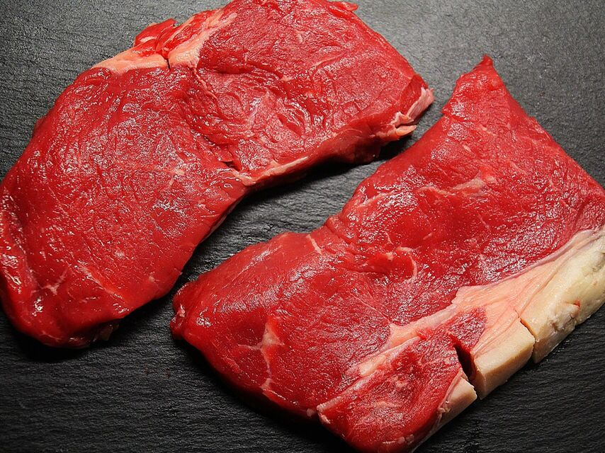

Grupo: Carne de Vacuno
Beneficios: Proteínas, Vitamina A
Alergias
- Alergia a la carne
- Fenilectoruna
- Síndrome de alfa-gal
- Lactosa (a veces)

Cuidado!
No puedes comer este alimento en grandes cantidades
Desde la resolución de la Organización Mundial de la Salud (OMS), se declaró que la carne roja puede ser dañina si es tomada en exceso. Entre los posibles problemas que te puede causar podemos encontrar Alto colesterol, Daño miocardial irreparable
Buscar en Google Corregir alergia
🇺🇸
Productos de celiacos contaminados
Panes y cervezas en Texas han sido contaminadas. Los lotes corresponden a la empresa Bimbo y Mahou
22/03/2019
🇺🇸
Productos de celiacos contaminados
Panes y cervezas en Texas han sido contaminadas. Los lotes corresponden a la empresa Bimbo y Mahou
22/03/2019
🇺🇸
Productos de celiacos contaminados
Panes y cervezas en Texas han sido contaminadas. Los lotes corresponden a la empresa Bimbo y Mahou
22/03/2019